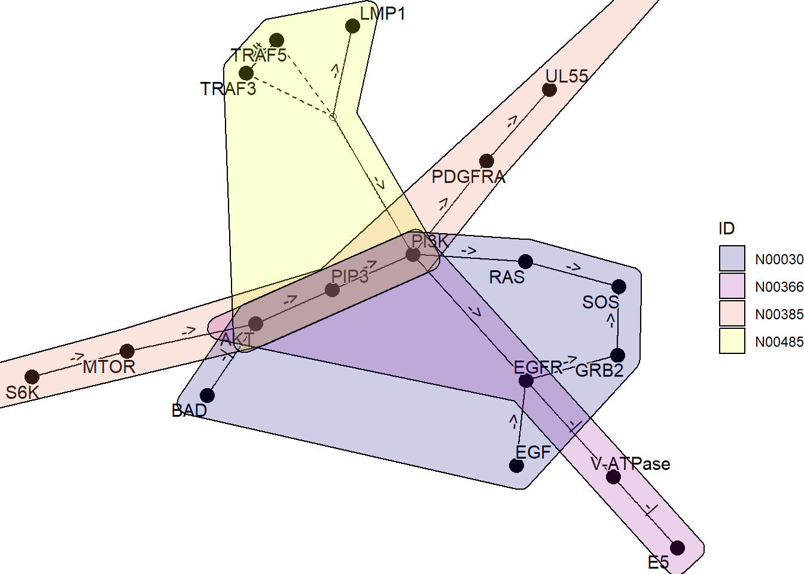

4 Network
It is also possible to parse the KEGG NETWORK and plot it as a network in the same way. In this case, the network function is used.
library(ggkegg)
library(tidygraph)
library(dplyr)
kne <- network("N00002")
kne
#> N00002
#> BCR-ABL fusion kinase to RAS-ERK signaling pathway4.1 Combining multiple networks
Here is an example of obtaining multiple networks, merging them with graph_join, and plotting them using the plot_kegg_network wrapper function. The network_graph function is a function that generates a graph from a string. It is possible to specify definition or expanded as the type to generate the graph.
kne <- network("N00385") ## HCMV
kne2 <- network("N00366") ## HPV
one <- kne |> network_graph()
two <- kne2 |> network_graph()
two
#> # A tbl_graph: 6 nodes and 5 edges
#> #
#> # A rooted tree
#> #
#> # A tibble: 6 × 3
#> name network_name network_ID
#> <chr> <chr> <chr>
#> 1 E5 HPV E5 to EGFR-PI3K signaling pathway N00366
#> 2 V-ATPase HPV E5 to EGFR-PI3K signaling pathway N00366
#> 3 EGFR HPV E5 to EGFR-PI3K signaling pathway N00366
#> 4 PI3K HPV E5 to EGFR-PI3K signaling pathway N00366
#> 5 PIP3 HPV E5 to EGFR-PI3K signaling pathway N00366
#> 6 AKT HPV E5 to EGFR-PI3K signaling pathway N00366
#> #
#> # A tibble: 5 × 4
#> from to type subtype
#> <int> <int> <chr> <chr>
#> 1 1 2 -| reference
#> 2 2 3 -| reference
#> 3 3 4 -> reference
#> # ℹ 2 more rows
graph_join(one, two, by="name") |> plot_kegg_network()
By using ggforce, it is possible to draw multiple graphs showing which genes belong to which network.
kne3 <- network("N00485") ## EBV
kne4 <- network("N00030") ## EGF-EGFR-RAS-PI3K
three <- kne3 |> network_graph()
four <- kne4 |> network_graph()
gg <- Reduce(function(x,y) graph_join(x,y, by="name"), list(one, two, three, four))
coln <- gg |> activate(nodes) |> data.frame() |> colnames()
nids <- coln[grepl("network_ID",coln)]
net <- plot_kegg_network(gg)
for (i in nids) {
net <- net + ggforce::geom_mark_hull(alpha=0.2, aes(group=.data[[i]],
fill=.data[[i]], x=x, y=y, filter=!is.na(.data[[i]])))
}
net + scale_fill_manual(values=viridis::plasma(4), name="ID")
## Better to plot points and edges after the hull